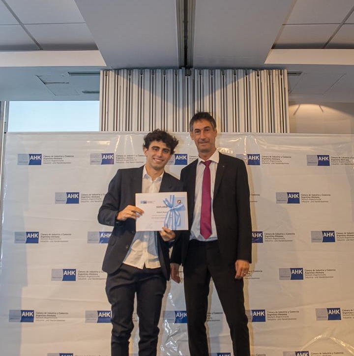
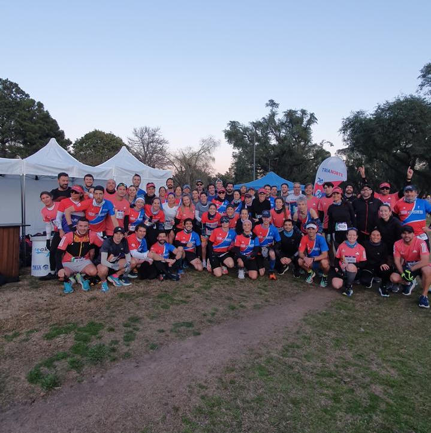

Started my Bachelor's degree in Mathematics!
October 7, 2025. Thanks to my Ausbildung, I was able to start my Bachelor's degree in Mathematics at TU Berlin.
Student
Hi, I'm Joaquin Rivero. I was born in Argentina and I'm currently studying Mathematics at TU Berlin. I enjoy running, reading, sleeping, chocolate, and a few other things. I'm especially interested in topics that connect the natural sciences with technology. Below you can find a bit more information about me.
Cheers!
October 7, 2025. Thanks to my Ausbildung, I was able to start my Bachelor's degree in Mathematics at TU Berlin.

December 20, 2024. After two years of working and studying in a joint program between the AHK and Sartorius AG, I finished my Ausbildung.

August 25, 2024. After a few months of training, I finally completed my first half marathon.
Reading is one of my favorite hobbies. Here are some of my favorite books.
A classic about a group of men who build a giant cannon to travel to the Moon.
Professor Lidenbrock and his nephew follow a mysterious clue that leads them on an unforgettable journey.
A collection of stories about humans colonizing Mars and building a new society there.
The story of how Joshua Boger founded Vertex Pharmaceuticals, one of the world's largest biotechnology companies.
The life story of one of the people who revolutionized the way we use computers, listen to music, watch movies, and more.
Through experiments and case studies, this book shows how the brain can adapt and rewire itself.
A book that helps us understand how our brain works, and therefore understand ourselves better.
Rowińska shows how abstract mathematical ideas are applied in practical contexts we may never have noticed.